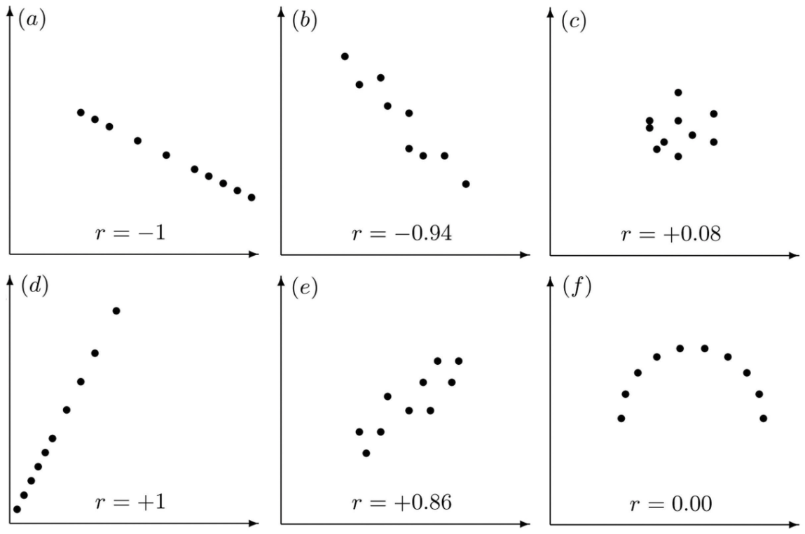
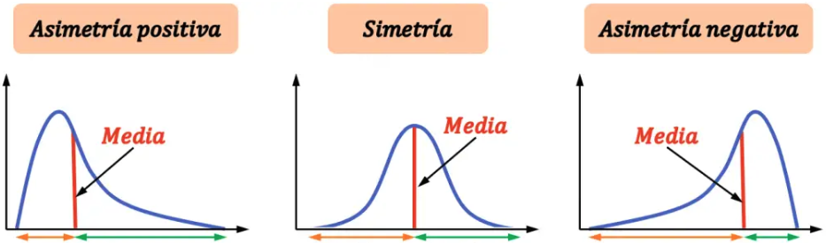
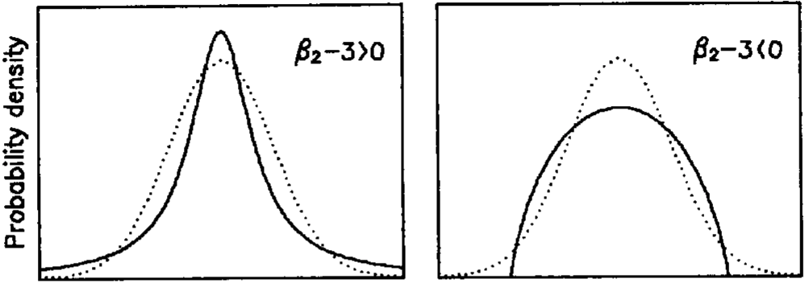
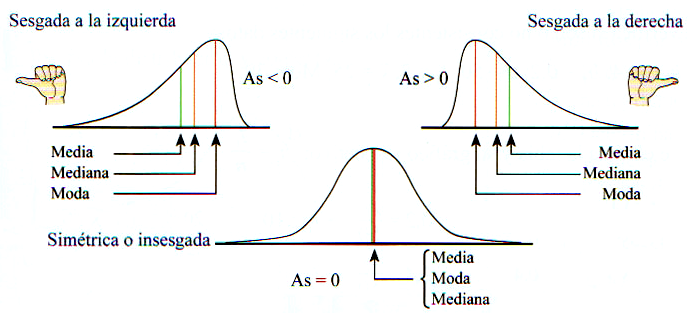

3. Estadísticos Principales#
3.1. Esperanza#
La esperanza o valor esperado o media de una v.a. \(X\) se denota \(E[X]\) o \(\mu\). Es una medida de tendencia central. Se calcula como:
\(\begin{array}{ll} E[X] = \left\{\begin{array}{ll} \sum_x x P(X=x) = \sum_x x f(x) & si\,X\, discreta\\ \int x f(x)dx & si\,X\, continua\\ \end{array} \right .\\ \end{array}\)
Consideremos \(g\) una función a valores reales, entonces:
\(\begin{array}{lll} E[g(X)] & = & \left\{\begin{array}{ll} \sum_x g(x) P(X=x) = \sum_x g(x) f(x) & si\,X\, discreta\\ \int g(x) f(x)dx & si\,X\, continua\\ \end{array}\right .\\ \end{array}\)
Para el caso especial de \(g(x) = x^n\) se define el n-ésimo momento de la v.a. X (o su distribución de probabilidad) como:
\(\begin{array}{lll} E[X^n] & = & \left\{\begin{array}{ll} \sum_x x^n P(X=x) = \sum_x x^n f(x) & si\,X\, discreta\\ \int x^n f(x)dx & si\,X\, continua\\ \end{array}\right .\\ \end{array}\)
Los momentos son ciertas medidas cuantitativas relacionadas con la forma del gráfico de la función de la distribución de probabilidad.
La esperanza es el primer momento y se denota \(\mu\).
El \(n\)-ésimo momento centrado sobre la media es \(\mu_n = E[(X − \mu)^n]\).
El \(n\)-ésimo momento estándar es \(\frac{\mu_n}{\sigma_n} = \frac{E[(X − \mu)^n]}{\sigma^n} = E[(\frac{X − \mu}{\sigma})^n]\) (\(\sigma\) es la desviación estándar).
Para dos variables aleatorias X, Y y una función de ellos \(g\):
\(\begin{array}{lll} E[g(X, Y)] & = \left\{\begin{array}{ll} \sum_x \sum_y g(x, y) P(X=x, Y=y) = \sum_x \sum_y g(x, y) f(x, y) & si\,X,Y\, discreta\\ \int \int g(x, y) f(x, y)dx dy & si\,X,Y\, continua\\ \end{array}\right .\\ \end{array}\)
Propiedades
Sean \(a,b \in \cal{R}\) entonces:
\(\begin{array}{lll} E[aX+b] & = & aE[X] + b \\ E[X + Y] & = & E[X] + E[Y]\\ \end{array}\)
3.2. Varianza, covarianza y correlación#
3.2.1. Varianza#
La varianza (\(\sigma^2\)) mide la variación de la v.a. en torno a la esperanza o media (\(E[X]\) o \(\mu\)). Es una medida de dispersión. Se define como
\(\begin{array}{lll} Var(X) = E[(X-\mu)^2] & = & \left\{\begin{array}{ll} \sum_x (x-\mu)^2 f(x) & si\,X\, discreta\\ \int (x-\mu)^2 f(x)dx & si\,X\, continua\\ \end{array}\right. = E[X^2] - \mu^2\\ \end{array}\)
La varianza es el segundo momento centrado sobre la media.
Propiedad
Sean \(a,b \in \cal{R}\) entonces:
\(\begin{array}{ll} Var(aX+b) = a^2 Var(X) \end{array}\)
3.2.2. Desviación estándar#
Se define además la desviación estándar \(\sigma = \sqrt{Var(X)}\) (mantiene la unidad de X)
3.2.3. Covarianza#
La covarianza mide la relación (lineal) que hay entre dos v.a. \(X\) e \(Y\). Si denotamos \(\mu_X = E[X]\) y \( \mu_Y= E[Y]\) entonces:
\(\begin{array}{lll} Cov(X,Y) & = & E[(X-\mu_X)(Y-\mu_y)] \\ & = & \left\{\begin{array}{ll} \sum_x \sum_y (x-\mu_X)(y-\mu_y) f(x, y) & si\,X,Y\, discreta\\ \int \int (x-\mu_X)(y-\mu_y) f(x, y)dx dy & si\,X,Y\, continua\\ \end{array}\right .\\ \end{array}\)
Propiedades
\(\begin{array}{lll} Cov(X,Y) & = & E[XY] - \mu_X \mu_Y \\ Cov(X,Y) & = & Cov(Y,X) \\ Cov(X,X) & = & Var(X)\\ Cov(X+Z,Y) & = & Cov(X,Y) + Cov(Z,Y)\\ Cov(\sum_i \limits X_i,Y) & = & \sum_i \limits Cov(X_i,Y)\\ Var(X+Y) & = & Var(X) + Var(Y) + 2Cov(X,Y)\\ Var(\sum_i \limits X_i) & = & \sum_i \limits Var(X_i) + \sum_i \limits \sum_{j\neq i} \limits Cov(X_i,X_j) \end{array}\)
3.2.4. Corelación#
La correlación es una medida normalizada de la covarianza que tiene valor entre -1 y 1:
\(\begin{array}{lll} \rho(X,Y) & = & \frac{Cov(X,Y)}{\sigma_x(X) \sigma_y(Y)} \end{array}\)
Lo anterior define la correlación de Pearson que mide correlación lineal entre variables. Cuano se aplica a una población, generalmente usamos \(\rho\) para denotarla; cuando se aplica a un muestra, generalmente usamos \(r\) para denotarla. La siguiente figura muestra algunos ejemoplos para yudar a entender cómo mide la correlación lineal. Hay otros tipos de correlación que pueden medir la correlación no lineal (Spearman, Kendall).
{kind=link}
Figura: Ejemoplos para la correlación de Pearson (fuente)
Corelación y Independencia
En la última imagen, \(r = 0\), pero los dos v.a. tienen una relación no lineal y no son independentes. Por ejemplo, \(P(X=x)=\frac{1}{3}\) para \(X\)=-1, 0, o 1, y \(Y=-X^2\).
Cuál es la relación entre zero corelación y independencia?
Si \(X\), \(Y\) son independientes, \(\quad\) entonces \(Cov(X,Y) = 0\) o \(\rho = 0\). (Por qué?)
Si \(Cov(X,Y) = 0\) o \(\rho = 0\), \(\quad\) \(X\), \(Y\) no son necesariamente independientes.
Cuál es el diagrama de Venn de ellos?
3.2.5. Propiedades en el caso de independencia#
Si \(X\), \(Y\) son v.a. independientes, entonces:
\(\begin{array}{lll} E[XY] & = & E[X]E[Y] \\ Cov(X,Y) & = & 0\\ Var(X+Y) & = & Var(X) + Var(Y)\\ \end{array}\)
3.3. Asimetría y curtosis#
3.3.1. Asimetría (skewness)#
Las medidas de asimetría son indicadores que permiten establecer el grado de simetría (o asimetría). La asimetría es el tercer momento estándar de una distribución.
\(\begin{array}{lll} \text{ Asimetría (skewness) } & = & E[(\frac{X-\mu}{\sigma})^3] = \frac{E[(X-\mu)^3]}{\sigma^3} = \frac{E[X^3]-3\mu\sigma^2 - \mu^3}{\sigma^3}\\ \end{array}\)
{kind=link}
Figura: Asimetría (fuente)
3.3.2. Curtosis#
La curtosis es una medida de que tan gruesa la cola y plano está una distribución, respecto a la distribución normal. La curtosis es el cuarto momento estándar de una distribución.
\(\begin{array}{lll} \text{ Curtosis } & = &E[(\frac{X-\mu}{\sigma})^4] = \frac{E[(X-\mu)^4]}{\sigma^4} = \frac{E[X^4] - 4\mu E[X^3] + 6\mu^2\sigma^2 + 3\mu^4}{\sigma^4}\\ \text{ Exceso de curtosis } & = & Curtosis - 3\\ \end{array}\)
{kind=link}
Figura: \(\beta_2\) es la medida de curtosis aquí (fuente)
Una mayor curtosis implica una mayor concentración de valores lejos del centro (es decir, las colas más gruesas), y a menudo más puntiaguda, respecto a la normal.
Una menor curtosis implica una menor concentración de valores lejos del centro (es decir, las colas menos gruesas), y a menudo más plano, respecto a la normal.
Advertencia
Hay varios conceptos erróneos comunes sobre la curtosis en materiales en línea y libros de texto. Aquí están los entendimientos correctos:
La curtosis no solo implica que tan puntiaguda está la distribución, también implica que tan gruesa la cola principalmente.
Una mayor curtosis implica colas más gruesas no menos gruesa, y a menudo más puntiaguda, respecto a la normal.
Una mayor curtosis no implica una mayor varianza, ni viceversa. La curtosis se escala con respecto a la varianza, por lo que no se ve afectada por ella.
Más detalles se pueden encontrar aquí.
3.4. Mediana y moda#
La mediana es el valor de la variable de posición central en un conjunto de datos ordenados.
La moda es el valor que aparece con mayor frecuencia en un conjunto de datos.
Ambas son otras medidas de tendencia central.
{kind=link}
Figura: Mediana, moda y media de diferentes distribuciones (fuente)
Advertencia
De menudo se usa la media para informar la tendencia central. Pero no es una estadística robusta: está muy influida por los valores atípicos (outliers). En las distribuciones asimétricas, la mediana proporciona una mejor descripción de la tendencia central.